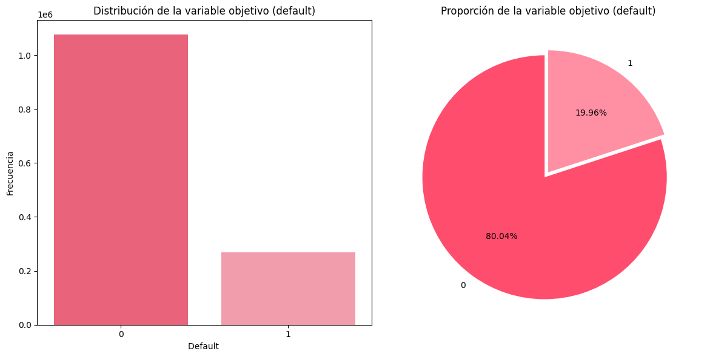
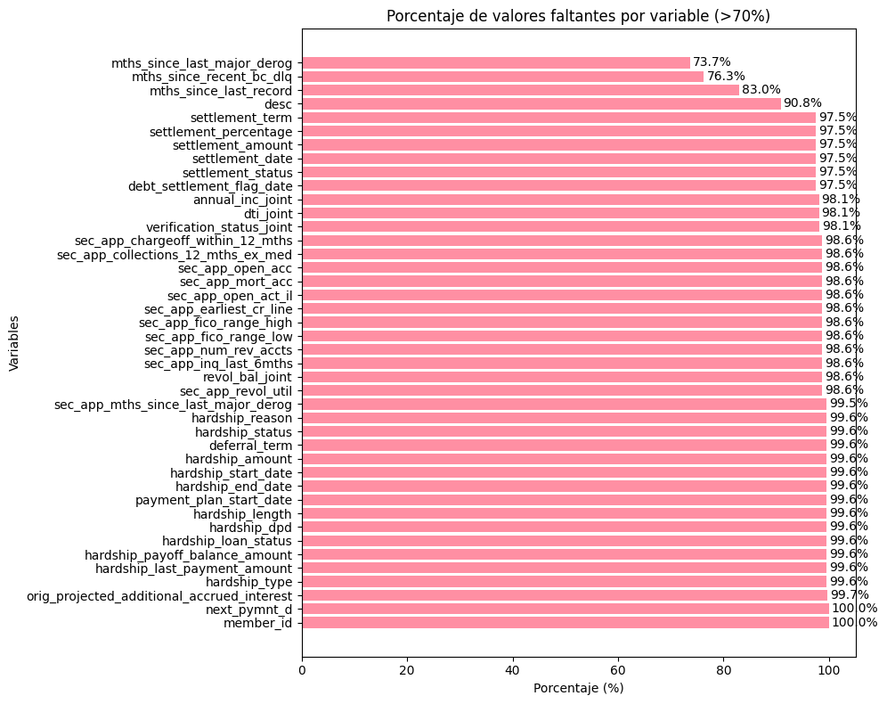

Análisis Exploratorio de los Datos#
Nuestra base de datos de interés recibe el nombre de Lending Club Loan Data (2007–2020). Esta fue descargada del repositorio global Kaggle. Cuenta con más de 1,3 millones de registros y con variables socioeconómicas, financieras, de crédito, empleo y propósito del préstamo, etc.
Librerías#
import pandas as pd
import numpy as np
import matplotlib.pyplot as plt
import seaborn as sns
import pickle
import warnings
warnings.filterwarnings('ignore')
Sobre la base de datos#
data = pd.read_csv('../data/aceptados.csv')
data
| id | member_id | loan_amnt | funded_amnt | funded_amnt_inv | term | int_rate | installment | grade | sub_grade | ... | hardship_payoff_balance_amount | hardship_last_payment_amount | disbursement_method | debt_settlement_flag | debt_settlement_flag_date | settlement_status | settlement_date | settlement_amount | settlement_percentage | settlement_term | |
|---|---|---|---|---|---|---|---|---|---|---|---|---|---|---|---|---|---|---|---|---|---|
| 0 | 68407277 | NaN | 3600.0 | 3600.0 | 3600.0 | 36 months | 13.99 | 123.03 | C | C4 | ... | NaN | NaN | Cash | N | NaN | NaN | NaN | NaN | NaN | NaN |
| 1 | 68355089 | NaN | 24700.0 | 24700.0 | 24700.0 | 36 months | 11.99 | 820.28 | C | C1 | ... | NaN | NaN | Cash | N | NaN | NaN | NaN | NaN | NaN | NaN |
| 2 | 68341763 | NaN | 20000.0 | 20000.0 | 20000.0 | 60 months | 10.78 | 432.66 | B | B4 | ... | NaN | NaN | Cash | N | NaN | NaN | NaN | NaN | NaN | NaN |
| 3 | 66310712 | NaN | 35000.0 | 35000.0 | 35000.0 | 60 months | 14.85 | 829.90 | C | C5 | ... | NaN | NaN | Cash | N | NaN | NaN | NaN | NaN | NaN | NaN |
| 4 | 68476807 | NaN | 10400.0 | 10400.0 | 10400.0 | 60 months | 22.45 | 289.91 | F | F1 | ... | NaN | NaN | Cash | N | NaN | NaN | NaN | NaN | NaN | NaN |
| ... | ... | ... | ... | ... | ... | ... | ... | ... | ... | ... | ... | ... | ... | ... | ... | ... | ... | ... | ... | ... | ... |
| 2260696 | 88985880 | NaN | 40000.0 | 40000.0 | 40000.0 | 60 months | 10.49 | 859.56 | B | B3 | ... | NaN | NaN | Cash | N | NaN | NaN | NaN | NaN | NaN | NaN |
| 2260697 | 88224441 | NaN | 24000.0 | 24000.0 | 24000.0 | 60 months | 14.49 | 564.56 | C | C4 | ... | NaN | NaN | Cash | Y | Mar-2019 | ACTIVE | Mar-2019 | 10000.0 | 44.82 | 1.0 |
| 2260698 | 88215728 | NaN | 14000.0 | 14000.0 | 14000.0 | 60 months | 14.49 | 329.33 | C | C4 | ... | NaN | NaN | Cash | N | NaN | NaN | NaN | NaN | NaN | NaN |
| 2260699 | Total amount funded in policy code 1: 1465324575 | NaN | NaN | NaN | NaN | NaN | NaN | NaN | NaN | NaN | ... | NaN | NaN | NaN | NaN | NaN | NaN | NaN | NaN | NaN | NaN |
| 2260700 | Total amount funded in policy code 2: 521953170 | NaN | NaN | NaN | NaN | NaN | NaN | NaN | NaN | NaN | ... | NaN | NaN | NaN | NaN | NaN | NaN | NaN | NaN | NaN | NaN |
2260701 rows × 151 columns
Variable objetivo: default#
Antes de iniciar el análisis de nuestros datos, vamos a crear la columna correspondiente a la variable objetivo. En este caso, vamos a basarnos en la variable loan_status y consideraremos únicamente las categorías: Fully Paid (0) y Charged Off (1).
data = data[data['loan_status'].isin(['Fully Paid', 'Charged Off'])].copy()
data["default"] = data["loan_status"].apply(lambda x: 1 if x == "Charged Off" else 0)
data['default'].value_counts()
default
0 1076751
1 268559
Name: count, dtype: int64
default_counts = data['default'].value_counts(normalize = True)
default_counts
default
0 0.800374
1 0.199626
Name: proportion, dtype: float64
Al analizar la columna default, que indica si un préstamo se paga completamente o no, encontramos una distribución desbalanceada. En total, se registran 1076751 (80.04%) observaciones con un valor correspondiente a 0, lo que significa que el crédito se paga en su totalidad. Por otro lado, solo 268559 (19.96%) observaciones tienen un valor de 1, indicando que el préstamo queda en default.
fig, axes = plt.subplots(1, 2, figsize=(12, 6))
sns.countplot(x = data['default'], hue = data['default'], palette = ['#FF4D6D', '#FF8FA3'], legend = False, ax=axes[0])
axes[0].set_title('Distribución de la variable objetivo (default)')
axes[0].set_xlabel('Default ')
axes[0].set_ylabel('Frecuencia')
default_counts.plot(kind = 'pie', autopct = '%1.2f%%', colors = ['#FF4D6D', '#FF8FA3'], startangle = 90, explode = (0.05, 0), ax = axes[1])
axes[1].set_title('Proporción de la variable objetivo (default)')
axes[1].set_ylabel('')
plt.tight_layout()
plt.show()

En estos dos gráficos, podemos observar más claramente el desbalanceo presente en nuestra variable objetivo. En este orden de ideas, se puede afirmar que, entre las observaciones, las que predominan son aquellas que corresponden a préstamos para pagar completamente.
Luego de analizar la variable objetivo, procedemos a borrar la variable loan_status del conjunto de datos pues contiene la misma exacta información que default.
data =data.drop(columns=['loan_status'])
Base de datos#
En cuanto a la base de datos, la de interés para este ejercicio fue la resultante de filtrar la variable loan_status y crear la variable objetivo default.
Esta es la que se usará para todo el procedimiento restante.
data
| id | member_id | loan_amnt | funded_amnt | funded_amnt_inv | term | int_rate | installment | grade | sub_grade | ... | hardship_last_payment_amount | disbursement_method | debt_settlement_flag | debt_settlement_flag_date | settlement_status | settlement_date | settlement_amount | settlement_percentage | settlement_term | default | |
|---|---|---|---|---|---|---|---|---|---|---|---|---|---|---|---|---|---|---|---|---|---|
| 0 | 68407277 | NaN | 3600.0 | 3600.0 | 3600.0 | 36 months | 13.99 | 123.03 | C | C4 | ... | NaN | Cash | N | NaN | NaN | NaN | NaN | NaN | NaN | 0 |
| 1 | 68355089 | NaN | 24700.0 | 24700.0 | 24700.0 | 36 months | 11.99 | 820.28 | C | C1 | ... | NaN | Cash | N | NaN | NaN | NaN | NaN | NaN | NaN | 0 |
| 2 | 68341763 | NaN | 20000.0 | 20000.0 | 20000.0 | 60 months | 10.78 | 432.66 | B | B4 | ... | NaN | Cash | N | NaN | NaN | NaN | NaN | NaN | NaN | 0 |
| 4 | 68476807 | NaN | 10400.0 | 10400.0 | 10400.0 | 60 months | 22.45 | 289.91 | F | F1 | ... | NaN | Cash | N | NaN | NaN | NaN | NaN | NaN | NaN | 0 |
| 5 | 68426831 | NaN | 11950.0 | 11950.0 | 11950.0 | 36 months | 13.44 | 405.18 | C | C3 | ... | NaN | Cash | N | NaN | NaN | NaN | NaN | NaN | NaN | 0 |
| ... | ... | ... | ... | ... | ... | ... | ... | ... | ... | ... | ... | ... | ... | ... | ... | ... | ... | ... | ... | ... | ... |
| 2260688 | 89905081 | NaN | 18000.0 | 18000.0 | 18000.0 | 60 months | 9.49 | 377.95 | B | B2 | ... | NaN | Cash | N | NaN | NaN | NaN | NaN | NaN | NaN | 0 |
| 2260690 | 88948836 | NaN | 29400.0 | 29400.0 | 29400.0 | 60 months | 13.99 | 683.94 | C | C3 | ... | NaN | Cash | N | NaN | NaN | NaN | NaN | NaN | NaN | 0 |
| 2260691 | 89996426 | NaN | 32000.0 | 32000.0 | 32000.0 | 60 months | 14.49 | 752.74 | C | C4 | ... | NaN | Cash | N | NaN | NaN | NaN | NaN | NaN | NaN | 1 |
| 2260692 | 90006534 | NaN | 16000.0 | 16000.0 | 16000.0 | 60 months | 12.79 | 362.34 | C | C1 | ... | NaN | Cash | N | NaN | NaN | NaN | NaN | NaN | NaN | 0 |
| 2260697 | 88224441 | NaN | 24000.0 | 24000.0 | 24000.0 | 60 months | 14.49 | 564.56 | C | C4 | ... | NaN | Cash | Y | Mar-2019 | ACTIVE | Mar-2019 | 10000.0 | 44.82 | 1.0 | 1 |
1345310 rows × 151 columns
data.shape
(1345310, 151)
El conjunto de datos contiene información de 1345310 préstamos aceptados, con 151 variables en total, entre las cuales 150 son características que describen a cada uno de estos, y una última variable binaria que corresponde a la variable objetivo de este proyecto.
data.columns
Index(['id', 'member_id', 'loan_amnt', 'funded_amnt', 'funded_amnt_inv',
'term', 'int_rate', 'installment', 'grade', 'sub_grade',
...
'hardship_last_payment_amount', 'disbursement_method',
'debt_settlement_flag', 'debt_settlement_flag_date',
'settlement_status', 'settlement_date', 'settlement_amount',
'settlement_percentage', 'settlement_term', 'default'],
dtype='object', length=151)
data.info()
<class 'pandas.core.frame.DataFrame'>
Index: 1345310 entries, 0 to 2260697
Columns: 151 entries, id to default
dtypes: float64(113), int64(1), object(37)
memory usage: 1.5+ GB
Entre todas las variables, 37 de ellas son de tipo object y las restantes de tipo numérico.
data.describe()
| member_id | loan_amnt | funded_amnt | funded_amnt_inv | int_rate | installment | annual_inc | dti | delinq_2yrs | fico_range_low | ... | hardship_amount | hardship_length | hardship_dpd | orig_projected_additional_accrued_interest | hardship_payoff_balance_amount | hardship_last_payment_amount | settlement_amount | settlement_percentage | settlement_term | default | |
|---|---|---|---|---|---|---|---|---|---|---|---|---|---|---|---|---|---|---|---|---|---|
| count | 0.0 | 1.345310e+06 | 1.345310e+06 | 1.345310e+06 | 1.345310e+06 | 1.345310e+06 | 1.345310e+06 | 1.344936e+06 | 1.345310e+06 | 1.345310e+06 | ... | 5754.000000 | 5754.0 | 5754.000000 | 3759.000000 | 5754.000000 | 5754.000000 | 33276.000000 | 33276.000000 | 33276.000000 | 1.345310e+06 |
| mean | NaN | 1.441997e+04 | 1.441156e+04 | 1.438914e+04 | 1.323962e+01 | 4.380755e+02 | 7.624764e+04 | 1.828267e+01 | 3.177944e-01 | 6.961850e+02 | ... | 147.434105 | 3.0 | 13.949426 | 410.696640 | 10995.141594 | 184.689314 | 5029.933417 | 47.691708 | 13.158132 | 1.996261e-01 |
| std | NaN | 8.717051e+03 | 8.713118e+03 | 8.715494e+03 | 4.768716e+00 | 2.615126e+02 | 6.992510e+04 | 1.116045e+01 | 8.779922e-01 | 3.185251e+01 | ... | 128.468905 | 0.0 | 9.777414 | 357.512115 | 7474.257379 | 196.459790 | 3684.827275 | 7.306107 | 8.235592 | 3.997195e-01 |
| min | NaN | 5.000000e+02 | 5.000000e+02 | 0.000000e+00 | 5.310000e+00 | 4.930000e+00 | 0.000000e+00 | -1.000000e+00 | 0.000000e+00 | 6.250000e+02 | ... | 0.640000 | 3.0 | 0.000000 | 1.920000 | 55.730000 | 0.010000 | 44.210000 | 0.200000 | 0.000000 | 0.000000e+00 |
| 25% | NaN | 8.000000e+03 | 8.000000e+03 | 7.875000e+03 | 9.750000e+00 | 2.484800e+02 | 4.578000e+04 | 1.179000e+01 | 0.000000e+00 | 6.700000e+02 | ... | 53.267500 | 3.0 | 5.000000 | 147.450000 | 5037.307500 | 39.570000 | 2228.617500 | 45.000000 | 6.000000 | 0.000000e+00 |
| 50% | NaN | 1.200000e+04 | 1.200000e+04 | 1.200000e+04 | 1.274000e+01 | 3.754300e+02 | 6.500000e+04 | 1.761000e+01 | 0.000000e+00 | 6.900000e+02 | ... | 109.820000 | 3.0 | 15.000000 | 303.450000 | 9305.100000 | 120.970000 | 4174.680000 | 45.000000 | 14.000000 | 0.000000e+00 |
| 75% | NaN | 2.000000e+04 | 2.000000e+04 | 2.000000e+04 | 1.599000e+01 | 5.807300e+02 | 9.000000e+04 | 2.406000e+01 | 0.000000e+00 | 7.100000e+02 | ... | 203.350000 | 3.0 | 23.000000 | 564.825000 | 15302.360000 | 267.605000 | 6884.237500 | 50.000000 | 18.000000 | 0.000000e+00 |
| max | NaN | 4.000000e+04 | 4.000000e+04 | 4.000000e+04 | 3.099000e+01 | 1.719830e+03 | 1.099920e+07 | 9.990000e+02 | 3.900000e+01 | 8.450000e+02 | ... | 943.940000 | 3.0 | 37.000000 | 2343.150000 | 39542.450000 | 1407.860000 | 33601.000000 | 521.350000 | 181.000000 | 1.000000e+00 |
8 rows × 114 columns
data.describe(include=['object'])
| id | term | grade | sub_grade | emp_title | emp_length | home_ownership | verification_status | issue_d | pymnt_plan | ... | hardship_status | hardship_start_date | hardship_end_date | payment_plan_start_date | hardship_loan_status | disbursement_method | debt_settlement_flag | debt_settlement_flag_date | settlement_status | settlement_date | |
|---|---|---|---|---|---|---|---|---|---|---|---|---|---|---|---|---|---|---|---|---|---|
| count | 1345310 | 1345310 | 1345310 | 1345310 | 1259525 | 1266799 | 1345310 | 1345310 | 1345310 | 1345310 | ... | 5754 | 5754 | 5754 | 5754 | 5754 | 1345310 | 1345310 | 33276 | 33276 | 33276 |
| unique | 1345310 | 2 | 7 | 35 | 378353 | 11 | 6 | 3 | 139 | 1 | ... | 2 | 26 | 25 | 25 | 5 | 2 | 2 | 83 | 3 | 89 |
| top | 68407277 | 36 months | B | C1 | Teacher | 10+ years | MORTGAGE | Source Verified | Mar-2016 | n | ... | COMPLETED | Sep-2017 | Dec-2017 | Oct-2017 | Late (16-30 days) | Cash | N | Jan-2019 | COMPLETE | Jan-2019 |
| freq | 1 | 1020743 | 392741 | 85494 | 21268 | 442199 | 665579 | 521273 | 48937 | 1345310 | ... | 3759 | 1493 | 1108 | 1065 | 2596 | 1338410 | 1312034 | 2451 | 14497 | 1635 |
4 rows × 37 columns
Ahora, identifiquemos cuáles variables tienen presencia de datos faltantes.
Datos faltantes#
faltantesporc = data.isnull().mean() * 100
# Filtrar columnas con más del 70% de faltantes
faltantesporc = faltantesporc[faltantesporc > 70]
print(f"Columnas con más del 70% de faltantes: {len(faltantesporc)}")
datafaltante = pd.DataFrame({
'Variable': faltantesporc.index,
'Porcentaje_faltantes_total': faltantesporc.values
}).sort_values('Porcentaje_faltantes_total', ascending=False)
plt.figure(figsize=(10, 8))
bars = plt.barh(
datafaltante['Variable'],
datafaltante['Porcentaje_faltantes_total'],
color='#FF8FA3'
)
plt.xlabel('Porcentaje (%)')
plt.ylabel('Variables')
plt.title('Porcentaje de valores faltantes por variable (>70%)')
plt.xlim(0, datafaltante['Porcentaje_faltantes_total'].max() + 5)
for bar in bars:
width = bar.get_width()
plt.text(width + 0.5, bar.get_y() + bar.get_height()/2, f'{width:.1f}%', va='center')
plt.tight_layout()
plt.show()
Columnas con más del 70% de faltantes: 42

En el gráfico se identifican 42 variables con más de un 70% de datos faltantes. Dado que contienen poca información útil, se decidió eliminarlas. Con ello, se descarta aproximadamente un 27.63% del total de variables de la base.
data = data.drop(columns=faltantesporc.index)
data
| id | loan_amnt | funded_amnt | funded_amnt_inv | term | int_rate | installment | grade | sub_grade | emp_title | ... | pub_rec_bankruptcies | tax_liens | tot_hi_cred_lim | total_bal_ex_mort | total_bc_limit | total_il_high_credit_limit | hardship_flag | disbursement_method | debt_settlement_flag | default | |
|---|---|---|---|---|---|---|---|---|---|---|---|---|---|---|---|---|---|---|---|---|---|
| 0 | 68407277 | 3600.0 | 3600.0 | 3600.0 | 36 months | 13.99 | 123.03 | C | C4 | leadman | ... | 0.0 | 0.0 | 178050.0 | 7746.0 | 2400.0 | 13734.0 | N | Cash | N | 0 |
| 1 | 68355089 | 24700.0 | 24700.0 | 24700.0 | 36 months | 11.99 | 820.28 | C | C1 | Engineer | ... | 0.0 | 0.0 | 314017.0 | 39475.0 | 79300.0 | 24667.0 | N | Cash | N | 0 |
| 2 | 68341763 | 20000.0 | 20000.0 | 20000.0 | 60 months | 10.78 | 432.66 | B | B4 | truck driver | ... | 0.0 | 0.0 | 218418.0 | 18696.0 | 6200.0 | 14877.0 | N | Cash | N | 0 |
| 4 | 68476807 | 10400.0 | 10400.0 | 10400.0 | 60 months | 22.45 | 289.91 | F | F1 | Contract Specialist | ... | 0.0 | 0.0 | 439570.0 | 95768.0 | 20300.0 | 88097.0 | N | Cash | N | 0 |
| 5 | 68426831 | 11950.0 | 11950.0 | 11950.0 | 36 months | 13.44 | 405.18 | C | C3 | Veterinary Tecnician | ... | 0.0 | 0.0 | 16900.0 | 12798.0 | 9400.0 | 4000.0 | N | Cash | N | 0 |
| ... | ... | ... | ... | ... | ... | ... | ... | ... | ... | ... | ... | ... | ... | ... | ... | ... | ... | ... | ... | ... | ... |
| 2260688 | 89905081 | 18000.0 | 18000.0 | 18000.0 | 60 months | 9.49 | 377.95 | B | B2 | NaN | ... | 0.0 | 0.0 | 275356.0 | 54349.0 | 13100.0 | 77756.0 | N | Cash | N | 0 |
| 2260690 | 88948836 | 29400.0 | 29400.0 | 29400.0 | 60 months | 13.99 | 683.94 | C | C3 | Chief Operating Officer | ... | 0.0 | 0.0 | 719056.0 | 148305.0 | 56500.0 | 95702.0 | N | Cash | N | 0 |
| 2260691 | 89996426 | 32000.0 | 32000.0 | 32000.0 | 60 months | 14.49 | 752.74 | C | C4 | Sales Manager | ... | 0.0 | 0.0 | 524379.0 | 122872.0 | 15800.0 | 23879.0 | N | Cash | N | 1 |
| 2260692 | 90006534 | 16000.0 | 16000.0 | 16000.0 | 60 months | 12.79 | 362.34 | C | C1 | Manager | ... | 3.0 | 0.0 | 87473.0 | 65797.0 | 10100.0 | 73473.0 | N | Cash | N | 0 |
| 2260697 | 88224441 | 24000.0 | 24000.0 | 24000.0 | 60 months | 14.49 | 564.56 | C | C4 | Program Manager | ... | 1.0 | 0.0 | 84664.0 | 62426.0 | 20700.0 | 58764.0 | N | Cash | Y | 1 |
1345310 rows × 109 columns
Así, el conjunto de datos conserva el mismo número de filas, pero ahora cuenta con 109 variables en total.
Limpieza del conjunto de datos#
Antes de realizar la imputación correspondiente a cada variable, vamos a identificar casos puntuales de algunas que también pueden ser eliminadas.
En particular, nos referimos a variables que causan ruido dentro del conjunto de datos por las distintas razones que se mencionan en cada caso.
id & url#
Las variables id y url son identificadores únicos, es decir, todos los valores de las columnas son diferentes entre sí y lo único que hacen es identificar al préstamo específico, por lo tanto, no representan información relevante o útil para la predicción.
data['id'].nunique(), data['url'].nunique()
(1345310, 1345310)
# Eliminación de variables que son identificadores únicos
data = data.drop(columns=['id','url'])
emp_title#
data['emp_title'].nunique()
378353
data['emp_title']
0 leadman
1 Engineer
2 truck driver
4 Contract Specialist
5 Veterinary Tecnician
...
2260688 NaN
2260690 Chief Operating Officer
2260691 Sales Manager
2260692 Manager
2260697 Program Manager
Name: emp_title, Length: 1345310, dtype: object
En cuanto a emp_title, podemos identificar que hace referencia al cargo de la persona en su respectivo trabajo, sin embargo, se observa que fue una pregunta abierta por lo que no cuenta con categorías establecidas y, por ende, contiene demasiados valores únicos.
# Eliminación de variable que tiene muchas categorías
data = data.drop(columns=['emp_title'])
grade & sub_grade#
Sobre la variable grade se puede mencionar que se identificó una relación con la variable sub_grade. Esto se puede observar en la siguiente tabla.
# Eliminación de grade porque subgrade la representa
datagradesinna = data.dropna(subset=['grade'])
gruppgrade = datagradesinna.groupby('grade')
def top_subgrades(series):
if series.empty:
return ""
count_sub = series.value_counts()
return ", ".join(count_sub.index)
top_subgrades_per_grade = gruppgrade['sub_grade'].apply(top_subgrades)
dataresult = top_subgrades_per_grade.to_frame(name="Top Subgrades")
dataresult.index.name = 'Grade'
dataresult = dataresult.reset_index()
tabla = (
dataresult.style.set_caption("Subgrades más frecuentes por Grade")
.set_properties(
**{
'font-size': '10pt',
'border': '1px solid black',
'background-color': '#FFCCD5',
'color': 'black'
}
)
.set_table_styles([
{
'selector': 'th',
'props': [('background-color', '#FF8FA3'),
('font-weight', 'bold'),
('color', 'black')]
}
])
.hide(axis='index')
.set_properties(subset=['Top Subgrades'], **{'text-align': 'center'})
)
display(tabla)
| Grade | Top Subgrades |
|---|---|
| A | A5, A4, A1, A3, A2 |
| B | B4, B5, B3, B2, B1 |
| C | C1, C2, C3, C4, C5 |
| D | D1, D2, D3, D4, D5 |
| E | E1, E2, E3, E4, E5 |
| F | F1, F2, F3, F4, F5 |
| G | G1, G2, G3, G4, G5 |
Aquí vemos que todas las letras de sub_grade corresponden a la de grade por lo que se podría decir que transmiten la misma información. Sin embargo, la primera mencionada resulta ser más específica e informativa. En este orden de ideas, vamos a eliminar grade por motivos de redundancia.
data = data.drop(columns=['grade'])
title & purpose#
Sobre la variable title se puede mencionar que se identificó una relación con la variable purpose. Esto se puede observar en la siguiente tabla.
# Eliminación de title porque purpose la representa
datatitlesinna = data.dropna(subset=['title'])
grupopurpose = datatitlesinna.groupby('purpose')
def toptitles(series):
if series.empty:
return ""
counttitle = series.value_counts().head(3)
formatted_text = []
for title, count in counttitle.items():
formatted_text.append(f"{title}")
return ", ".join(formatted_text)
top_titles_per_purpose = grupopurpose['title'].apply(toptitles)
dataresult = top_titles_per_purpose.to_frame()
dataresult.rename(columns={'title': 'Títulos más comunes'}, inplace=True)
dataresult.index.name = 'Propósito'
dataresult = dataresult.reset_index()
tabla1 = dataresult.style.set_caption("Title según purpose") \
.set_properties(**{'font-size': '10pt', 'border': '1px solid black', 'background-color': '#FFCCD5','color' :'black'}, ) \
.set_table_styles([
{'selector': 'th', 'props': [('background-color', '#FF8FA3'), ('font-weight', 'bold'), ('color', 'black')]}
]) \
.hide(axis='index') \
.set_properties(subset=['Títulos más comunes'], **{'text-align': 'center'})
display(tabla1)
| Propósito | Títulos más comunes |
|---|---|
| car | Car financing, Car Loan, Auto Loan |
| credit_card | Credit card refinancing, Credit Card Refinance, Credit Card Consolidation |
| debt_consolidation | Debt consolidation, Debt Consolidation, debt consolidation |
| educational | Student Loan, Education, Personal Loan |
| home_improvement | Home improvement, Home Improvement, home improvement |
| house | Home buying, House Loan, Home Improvement |
| major_purchase | Major purchase, Major Purchase Loan, Major Purchase |
| medical | Medical expenses, Medical, Medical Loan |
| moving | Moving and relocation, Moving Loan, Moving |
| other | Other, Personal Loan, Personal |
| renewable_energy | Green loan, Green Loan, Renewable Energy |
| small_business | Business, Small Business Loan, Business Loan |
| vacation | Vacation, vacation, Vacation Loan |
| wedding | Wedding Loan, Wedding, Wedding expenses |
Aquí podemos observar claramente que los distintos títulos propuestos caen sobre una misma categoría que está relacionada con los valores de purpose. Con esto en mente, procedemos a eliminar title.
data = data.drop(columns=['title'])
Variables con un solo valor único#
Una práctica que vamos a realizar, es identificar si existen variables que, hasta este punto, cuentan con un solo valor único. Es decir, columnas que no tienen variabilidad y, por lo tanto, no son de utilidad.
dataunicos = data.nunique()
filtered_counts = dataunicos[dataunicos == 1].sort_values(ascending=False)
unicocounts_df = filtered_counts.to_frame(name='Valores Únicos')
tabla2 = unicocounts_df.style.set_caption("Variables con un solo valor único") \
.set_properties(**{'font-size': '10pt', 'border': '1px solid black', 'background-color': '#FFCCD5', 'color': 'black'}) \
.set_table_styles([
{'selector': 'th', 'props': [('background-color', '#FF8FA3'), ('font-weight', 'bold'), ('color', 'black')]}
]) \
.set_properties(subset=['Valores Únicos'], **{'text-align': 'center'})
display(tabla2)
| Valores Únicos | |
|---|---|
| pymnt_plan | 1 |
| out_prncp | 1 |
| out_prncp_inv | 1 |
| policy_code | 1 |
| hardship_flag | 1 |
dataunico1 = data[['pymnt_plan', 'out_prncp', 'out_prncp_inv', 'policy_code', 'hardship_flag']]
dataunico1.isnull().sum()
pymnt_plan 0
out_prncp 0
out_prncp_inv 0
policy_code 0
hardship_flag 0
dtype: int64
En efecto, hay 5 columnas que presentan esta particularidad. Asimismo, se puede observar que no tienen datos faltantes. Procedemos entonces a eliminar las variables: pymnt_plan, out_prncp, out_prncp_inv, policy_code y hardship_flag.
data = data.drop(columns=['pymnt_plan', 'out_prncp', 'out_prncp_inv', 'policy_code', 'hardship_flag'])
zip_code#
Finalmente, borraremos la variable zip_code debido a su gran cantidad de valores únicos, aparte de que, contamos ya con el estado en el que se encuentra la persona. Por ende, ya tenemos información relevante relacionada con la ubicación.
data['zip_code'].nunique()
943
data = data.drop(columns=['zip_code'])
Variables post-predicción#
Un aspecto importante a considerar es la posible fuga de información en el conjunto de datos.
Para este proyecto se realizaron distintas investigaciones con el fin de comprender a qué corresponde cada variable. En los trabajos analizados se compartía el diccionario correspondiente a este dataset (no disponible oficialmente para Colombia) y se identificó la existencia de variables asociadas a la etapa post de nuestra predicción objetivo.
A continuación, presentamos el diccionario de variables tomado del trabajo Lending Club EDA (Amirtharajanpks, 2019).
aqui va el diccionario
Al considerar estas definiciones, podemos entonces proceder a eliminar las siguientes variables que hablan del futuro de nuestro contexto.
data = data.drop(columns = ['collection_recovery_fee', 'last_pymnt_amnt', 'last_pymnt_d',
'recoveries', 'total_pymnt', 'total_pymnt_inv', 'total_rec_int', 'total_rec_late_fee', 'total_rec_prncp',
'last_credit_pull_d', 'last_fico_range_high', 'last_fico_range_low'])
Y ya con esto termina esta sección de limpieza de la base de datos. Ahora, contamos con un conjunto que tiene columnas con variabilidad, información útil para la predicción y que no van a ocasionar sesgo por explicar lo que se busca predecir.
Tratamiento de variables: mapeo e imputación de faltantes#
Categóricas#
Mapeo#
emp_length_mapping = {
'10+ years': 10,
'9 years': 9,
'8 years': 8,
'7 years': 7,
'6 years': 6,
'5 years': 5,
'4 years': 4,
'3 years': 3,
'2 years': 2,
'1 year': 1,
'< 1 year': 0.5,
'n/a': 0
}
data['emp_length'] = data['emp_length'].map(emp_length_mapping)
term_mapping = {
'36 months': 36,
'60 months': 60
}
data['term'] = data['term'].str.strip().str.lower()
data['term'] = data['term'].map(term_mapping)
# Convertir a datetime
data['issue_d'] = pd.to_datetime(data['issue_d'], format='%b-%Y')
data['earliest_cr_line'] = pd.to_datetime(data['earliest_cr_line'], format='%b-%Y')
# Calcular antigüedad en años (decimal)
data['credit_history_years'] = (data['issue_d'] - data['earliest_cr_line']).dt.days / 365
data = data.drop(columns=['issue_d', 'earliest_cr_line'])
En este apartado, lo que hicimos fue pasar las variables de fecha a tipo numérico basado en la antigüedad o cantidad de tiempo que ha pasado.
cols = list(data.columns)
if 'default' in cols:
cols.remove('default')
cols.append('default')
data = data[cols]
Imputación#
datacol = data.select_dtypes(include='object')
(datacol.isnull().sum() / len(data)) * 100
sub_grade 0.0
home_ownership 0.0
verification_status 0.0
purpose 0.0
addr_state 0.0
initial_list_status 0.0
application_type 0.0
disbursement_method 0.0
debt_settlement_flag 0.0
dtype: float64
Numéricas#
datanum = data.select_dtypes(include=np.number)
datanum
| loan_amnt | funded_amnt | funded_amnt_inv | term | int_rate | installment | emp_length | annual_inc | dti | delinq_2yrs | ... | pct_tl_nvr_dlq | percent_bc_gt_75 | pub_rec_bankruptcies | tax_liens | tot_hi_cred_lim | total_bal_ex_mort | total_bc_limit | total_il_high_credit_limit | credit_history_years | default | |
|---|---|---|---|---|---|---|---|---|---|---|---|---|---|---|---|---|---|---|---|---|---|
| 0 | 3600.0 | 3600.0 | 3600.0 | 36 | 13.99 | 123.03 | 10.0 | 55000.0 | 5.91 | 0.0 | ... | 76.9 | 0.0 | 0.0 | 0.0 | 178050.0 | 7746.0 | 2400.0 | 13734.0 | 12.342466 | 0 |
| 1 | 24700.0 | 24700.0 | 24700.0 | 36 | 11.99 | 820.28 | 10.0 | 65000.0 | 16.06 | 1.0 | ... | 97.4 | 7.7 | 0.0 | 0.0 | 314017.0 | 39475.0 | 79300.0 | 24667.0 | 16.010959 | 0 |
| 2 | 20000.0 | 20000.0 | 20000.0 | 60 | 10.78 | 432.66 | 10.0 | 63000.0 | 10.78 | 0.0 | ... | 100.0 | 50.0 | 0.0 | 0.0 | 218418.0 | 18696.0 | 6200.0 | 14877.0 | 15.342466 | 0 |
| 4 | 10400.0 | 10400.0 | 10400.0 | 60 | 22.45 | 289.91 | 3.0 | 104433.0 | 25.37 | 1.0 | ... | 96.6 | 60.0 | 0.0 | 0.0 | 439570.0 | 95768.0 | 20300.0 | 88097.0 | 17.512329 | 0 |
| 5 | 11950.0 | 11950.0 | 11950.0 | 36 | 13.44 | 405.18 | 4.0 | 34000.0 | 10.20 | 0.0 | ... | 100.0 | 100.0 | 0.0 | 0.0 | 16900.0 | 12798.0 | 9400.0 | 4000.0 | 28.186301 | 0 |
| ... | ... | ... | ... | ... | ... | ... | ... | ... | ... | ... | ... | ... | ... | ... | ... | ... | ... | ... | ... | ... | ... |
| 2260688 | 18000.0 | 18000.0 | 18000.0 | 60 | 9.49 | 377.95 | 5.0 | 130000.0 | 20.59 | 0.0 | ... | 100.0 | 33.3 | 0.0 | 0.0 | 275356.0 | 54349.0 | 13100.0 | 77756.0 | 12.260274 | 0 |
| 2260690 | 29400.0 | 29400.0 | 29400.0 | 60 | 13.99 | 683.94 | 9.0 | 180792.0 | 22.03 | 0.0 | ... | 100.0 | 42.9 | 0.0 | 0.0 | 719056.0 | 148305.0 | 56500.0 | 95702.0 | 14.597260 | 0 |
| 2260691 | 32000.0 | 32000.0 | 32000.0 | 60 | 14.49 | 752.74 | 3.0 | 157000.0 | 10.34 | 0.0 | ... | 100.0 | 0.0 | 0.0 | 0.0 | 524379.0 | 122872.0 | 15800.0 | 23879.0 | 5.339726 | 1 |
| 2260692 | 16000.0 | 16000.0 | 16000.0 | 60 | 12.79 | 362.34 | 10.0 | 150000.0 | 12.25 | 0.0 | ... | 92.0 | 50.0 | 3.0 | 0.0 | 87473.0 | 65797.0 | 10100.0 | 73473.0 | 19.180822 | 0 |
| 2260697 | 24000.0 | 24000.0 | 24000.0 | 60 | 14.49 | 564.56 | 6.0 | 110000.0 | 18.30 | 0.0 | ... | 96.2 | 40.0 | 1.0 | 0.0 | 84664.0 | 62426.0 | 20700.0 | 58764.0 | 17.265753 | 1 |
1345310 rows × 76 columns
datanum = datanum.select_dtypes(include=np.number)
missing_percentage_numeric = (datanum.isnull().sum() / len(data)) * 100
# --- 4. Filtrar los resultados para mostrar solo los porcentajes mayores a 0 ---
missing_percentage_numeric_gt_0 = missing_percentage_numeric[missing_percentage_numeric > 0]
# --- 5. Imprimir el resultado ---
print("Porcentaje de valores faltantes (mayor a 0) en variables numéricas:")
print(missing_percentage_numeric_gt_0)
Porcentaje de valores faltantes (mayor a 0) en variables numéricas:
emp_length 5.835904
dti 0.027800
inq_last_6mths 0.000074
mths_since_last_delinq 50.452535
revol_util 0.063703
collections_12_mths_ex_med 0.004163
tot_coll_amt 5.019438
tot_cur_bal 5.019438
open_acc_6m 60.039173
open_act_il 60.039099
open_il_12m 60.039099
open_il_24m 60.039099
mths_since_rcnt_il 61.095807
total_bal_il 60.039099
il_util 65.434287
open_rv_12m 60.039099
open_rv_24m 60.039099
max_bal_bc 60.039099
all_util 60.043038
total_rev_hi_lim 5.019438
inq_fi 60.039099
total_cu_tl 60.039173
inq_last_12m 60.039173
acc_open_past_24mths 3.514506
avg_cur_bal 5.021073
bc_open_to_buy 4.544900
bc_util 4.602062
chargeoff_within_12_mths 0.004163
mo_sin_old_il_acct 7.847634
mo_sin_old_rev_tl_op 5.019512
mo_sin_rcnt_rev_tl_op 5.019512
mo_sin_rcnt_tl 5.019438
mort_acc 3.514506
mths_since_recent_bc 4.476366
mths_since_recent_inq 12.939100
mths_since_recent_revol_delinq 66.553285
num_accts_ever_120_pd 5.019438
num_actv_bc_tl 5.019438
num_actv_rev_tl 5.019438
num_bc_sats 4.150791
num_bc_tl 5.019438
num_il_tl 5.019438
num_op_rev_tl 5.019438
num_rev_accts 5.019512
num_rev_tl_bal_gt_0 5.019438
num_sats 4.150791
num_tl_120dpd_2m 8.726688
num_tl_30dpd 5.019438
num_tl_90g_dpd_24m 5.019438
num_tl_op_past_12m 5.019438
pct_tl_nvr_dlq 5.030885
percent_bc_gt_75 4.575525
pub_rec_bankruptcies 0.051810
tax_liens 0.002899
tot_hi_cred_lim 5.019438
total_bal_ex_mort 3.514506
total_bc_limit 3.514506
total_il_high_credit_limit 5.019438
dtype: float64